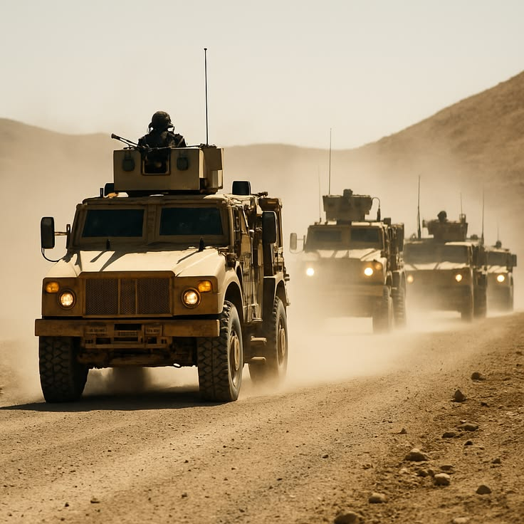

Defense advisory that has been where you're going
Africa-focused defense capability advisory and procurement support, grounded in operational credibility and environment-specific planning.
About the Solution
AZAREL brings Africa-focused capability advisory and procurement support to defense engagements, grounded in operational credibility and environment-specific planning. We go where our clients operate.
Africa's terrain, distances, and operating conditions shape every engagement. We plan for presence, oversight, and reach, and align capability to the conditions on the ground rather than the specification alone.
AZAREL is led by a former French Foreign Legion veteran with an operational background in security, defense, and strategic management. That brings practical field judgment, commercial awareness, and real operational understanding, drawn from program support, client and partner liaison, field representation, and coordination with specialists, suppliers, OEMs, and local partners.
Defense solutions
Capability Advisory Model
We translate operational needs into achievable, supportable capability, defining requirements and shaping programs around how they will actually be used.
Environment-Specific Planning
Plans built for African terrain, distances, and operating conditions, not adapted from a distant template.
Operational Coordination
Coordination across specialists, suppliers, OEMs, and local partners, so the moving parts of an engagement stay aligned.
Readiness Support
Making sure equipment, technology, and requirements meet the real operational need and are ready when they are needed.
Procurement Support (Defense-aligned)
Sourcing and procurement of defense-aligned equipment through vetted suppliers and OEMs, arranged around compliance and dependable delivery.
Supplier & OEM Relationships
Established relationships with trusted equipment suppliers and OEMs, giving clients reach and confidence in who delivers.
Typical engagements: defining a capability requirement, qualifying suppliers, and coordinating delivery of specialised equipment into a demanding operating environment.
Where We Operate
How AZAREL aligns capability to real-world conditions across the African operating environment.
- Frontier and emerging markets
- Post-transition and reforming security sectors
- Resource and energy frontiers
- Sub-Saharan Africa
